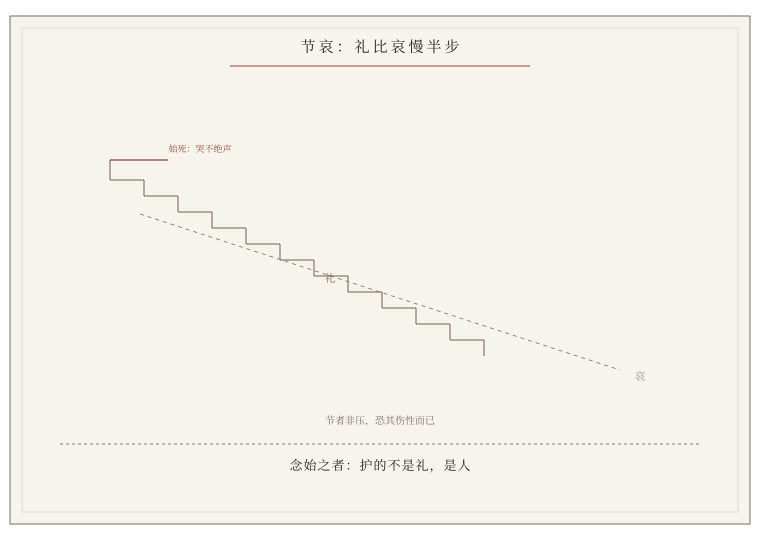

檀弓下 · 四·十四 · 第 339 课
丧礼，哀戚之至也。节哀，顺变也。君子念始之者也。
说什么事：丧礼是哀戚到了极处。而礼处处节哀，是顺着「变」的次第。君子所以如此，是念着「始」——念父母生我之恩。
落在哪一层：以「节」量哀。论「礼为什么给哀设台阶」。
为何编在此位：上三课皆记一事，此课为一节之纲。檀弓下自此转入丧仪诸目：复、饭、铭、奠，皆此纲之目。
【经】喪禮，哀戚之至也。節哀，順變也。君子念始之者也。
【注】始猶生也。念父母生己，不欲傷其性。
【疏】此一节记人总论孝子遭丧，所为哭踊、复魄、饭含、重主、殡葬、反哭之事，各依文解之。／言人或有祸灾，虽或悲哀，未是哀之至极。唯居父母丧礼，是哀戚之至极也。既为至极，若无节文，恐其伤性，故辟踊有节筭，裁节其哀也。故下文：「辟踊，哀之至，有筭，为之节文也。」／所以节哀者，欲顺孝子悲哀，使之渐变也。故下文云：「愠，哀之变也。」所以必此顺变者，君子思念父母之生已，恐其伤性，故顺变也。
哀戚之至 悲哀至极。非一切悲哀可比，唯居父母之丧为至极。
节哀 裁节其哀，使之有度数。
顺变 顺其哀之渐变。丧有次第，哀亦随之而杀。
始 注「始犹生也」，指父母生己之时。
伤其性 损伤其生命之本。「性」即生。
辟踊有算 捶胸、跳跃皆有定数。「算」为数。
丧礼，是哀戚到了极处的礼。而处处节制这哀，是顺着哀的渐次变化。君子所以要这样，是念着父母生我之初。
此章三句，是一套完整的道理：先立极，再立节，最后立节之所以然。
「哀戚之至」——立极：丧礼之哀，非他哀可比。 「节哀，顺变」——立节：正因至极，才必须有节。 「念始之者」——立故：节不是压你，是护你。
三句相承，礼的「限制」便成了「保护」。这是《檀弓》全篇最要紧的一处转语。
第一层 为何先要说「至」 若不先说哀之至，则「节」看起来像是无情。
礼书立论，多先立其极，再言其节。极不立，节无根；节不立，极必伤。此章先立极而后立节，次序不可倒。
第二层 「节」不是限，是度 注疏皆以「恐其伤性」为节之所以然。
一个哀恸至极的人，若无所节，则三日不食、昼夜不辍、捶踊无算，其势必至于病、至于死。礼为之定哭之时、踊之数、食之节，正为使他不至于死。
故「节哀」二字，实是「哀者自救」。礼在此不是外人，是那个在你耳边说「歇一歇」的声音。
第三层 「顺变」：礼跟着哀走，不逆着哀走 「顺变」二字最易误读为「压制」。其实正相反：礼随哀之渐杀而渐轻。
始死则哭不绝声，既殡则有朝夕之哭，既葬则有反哭，卒哭则有「成事」，练则「作」，祥则「缟」。一路下来，礼比哀慢半步。
若礼比哀快，则人从礼而不从心；若礼比哀慢，则人心已过而礼犹在，反成苦。檀弓之礼，力求慢半步。
第四层 「念始之者」：护的不是礼，是人 注一句「念父母生己，不欲伤其性」，把全部礼的动机归到一处。
父母生我，是要我活；我今哀之，若至于伤生，则是以哀报生，报错了。君子知之，故节。
此语极温。它把「孝」从「尽力去哀」改成了「尽力去活」——因为活着，才是父母当初的意思。
第五层 今日之用：给悲伤设台阶 今人面对重丧，两极最常见：一是不哭，以「坚强」自许；二是纵哭，以「尽孝」自许。
此节给的是第三条：哭有其时，哀有其节，不是不哭，是不哭到伤身。真正的孝，是把自己也当作父母所遗之物来护。
与今日何干 今日多有因丧而病、因哀而毁者，亦有以「节哀」二字硬劝人者。此节的分别很清楚：节哀不是劝你不哀，是替你算好一步一步；说「节哀」而不给台阶，只是一句空话。
| 左 | 右 |
|---|---|
| 哀戚之至 | 唯父母之丧为极 |
| 节哀 | 裁节其哀，使有度数 |
| 顺变 | 随哀之渐杀而渐轻 |
| 念始 | 念父母生己 |
| 不欲伤性 | 节之所以然 |
| 辟踊有算 | 节之见于动者 |
| 慢半步 | 礼比哀缓 |
| 养 | 礼之实义 |
画一道缓缓向下的长阶，视点平视略高。阶有十余级，自画面左端最高处起，向右渐低渐缓，末端没入画外。阶上不画人，只在每三级处画一道浅浅的横痕。阶之右侧留大片空白，空白处有一条极细的平行线，示「礼比哀慢半步」。赭色只用在第一级阶沿。
